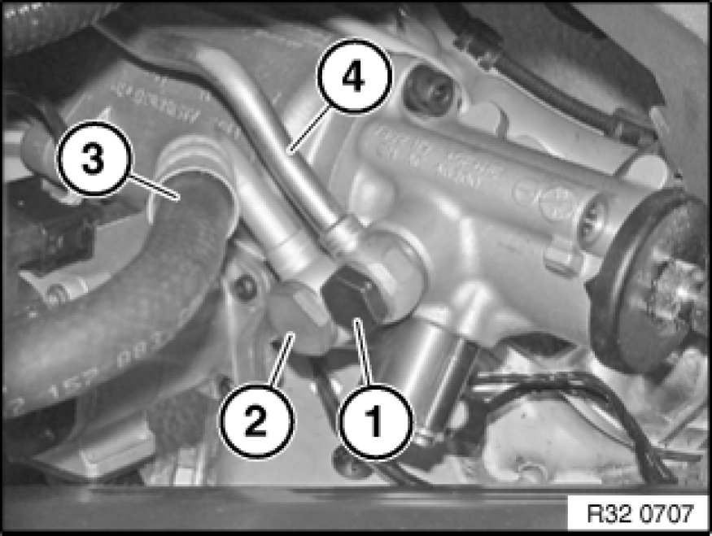
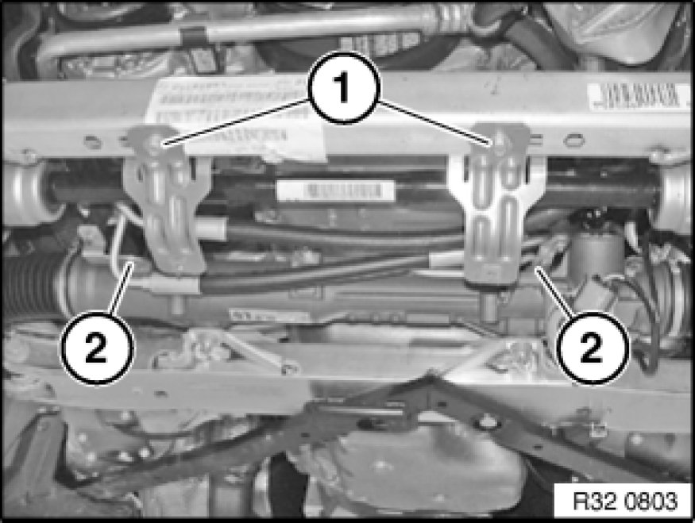
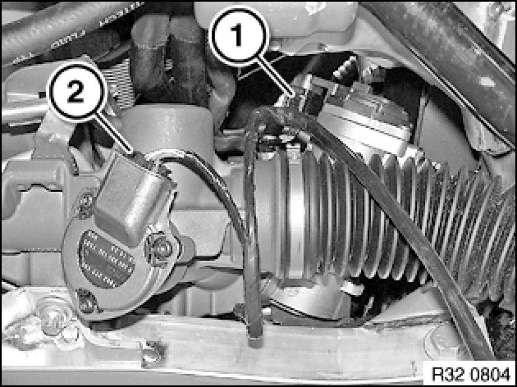
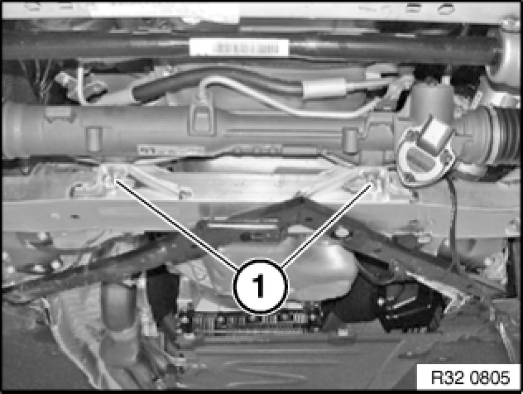
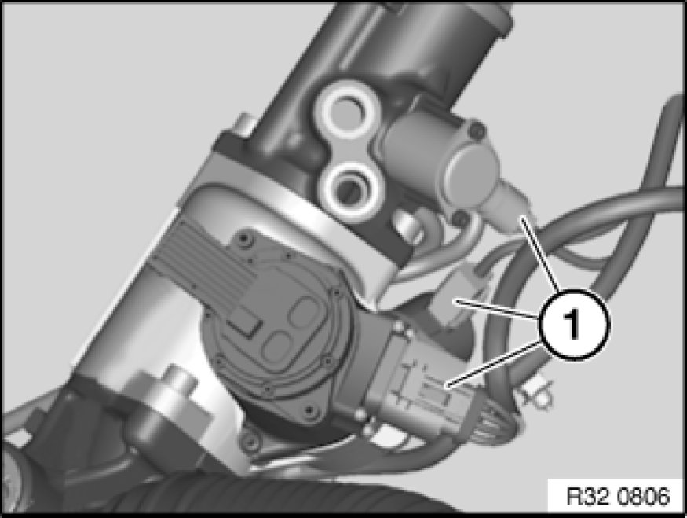

32 13 065 Removing and Installing Active Front Steering Hydraulic Steering Gear
32 13 065 - Removing and installing/replacing active front steering power steering gear

Warning!
Danger of poisoning 00 .. ... Danger of Poisoning If Oil Is Ingested/Absorbed Through the Skin if oil is ingested/absorbed through the skin!
Risk of injury 00 .. ... Risk of Injury If Oil Comes Into Contact With Eyes and Skin if oil comes into contact with eyes and skin!
Important!
Adhere to the utmost cleanliness. Do not allow any dirt to enter the hydraulic system.
Close off pipe connections with plugs.

Recycling:
Catch and dispose of hydraulic fluid in a suitable container.
Observe country-specific waste-disposal regulations

Necessary preliminary tasks:
- Draw off and dispose of hydraulic fluid from fluid reservoir
- Remove front underbody protection Removing and Installing/Replacing Front Underbody Protection
- If necessary, remove steering gear cover at side
- E88, E93: Remove V-strut on left and right
- Remove both tie rod ends from swivel bearing 32 21 151 Replacing Left or Right Tie Rod
- Replacement only: Remove both tie rod ends from tie rod 32 21 151 Replacing Left or Right Tie Rod
- Remove lower section of steering spindle from steering gear 32 31 070 Removing and Installing/Replacing Steering Spindle Lower Section
- Disconnect plug connection from power steering pump and expose connecting cable up to steering gear

If necessary, remove heat shield from steering gear.
Release banjo bolts (1, 2).
Disconnect pressure line (4) and return line (3) from steering gear.
Installation Note:
Replace all sealing rings.
Make sure hydraulic lines are laid without tension and with sufficient spacing to adjoining components.
Tightening torque 32 41 9AZ 32 41 Pump and Oil Supply (pressure line).
Tightening torque 32 41 10AZ 32 41 Pump and Oil Supply (return line).

Release screws (1) and remove brackets.
Release screws (2) and tie up pressure line.
Tightening torque 32 41 11AZ 32 41 Pump and Oil Supply.

Disconnect plug connection (1).
Build date up to 03/2007: Disconnect plug connection (2) on cumulative steering angle sensor.
Warning!
Risk of injury!
Tie up steering gear to prevent it from falling down when disconnecting plug connections.
Important!
Risk of damage!
Do not expose connecting cables to tensile load.

Release nuts and remove screws (1) towards bottom.
Move steering gear forwards and tie up.
Installation Note:
Replace screws and nuts.
Tightening torque 32 00 1AZ 32 00 Steering.

Disconnect plug connections (1) and remove steering gear.
After installation:
- Fill and bleed hydraulic system
- Check pipe connections for leaks
- Perform chassis alignment check
- Carry out adjustment for active front steering 32 10 005 Adjustment For Active Front Steering